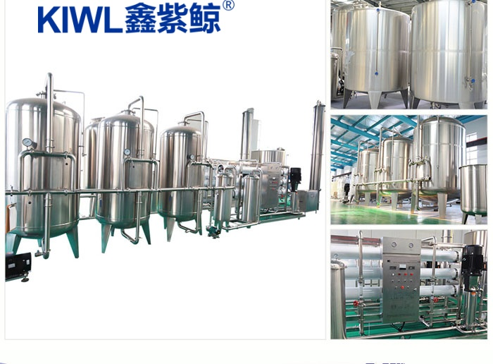
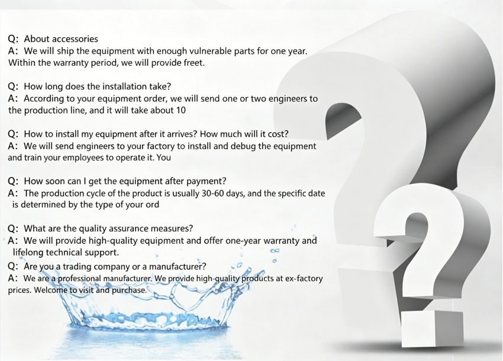
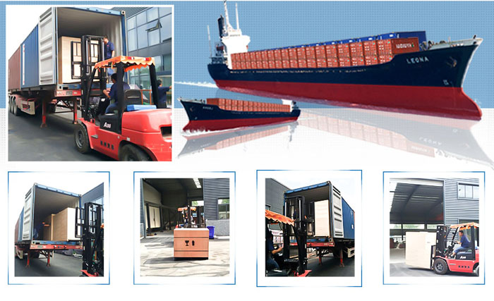

Water Treatment Equipment
Featured Products
- · Filling Production Line
- · Detergent Filling Machine
- · Hand Sanitizer Filling Machine
- · Disinfectant Filling Machine
- · Purified Water Filling Machine
- · Mineral Water Filling Machine
- · Carbonated Beverage Filler
- · 5-Gallon Barrel Water Filling Machine
- · Glass Bottle Beverage Filling Machine
- · Large Bottle Water Filling Machine
- · Aseptic Beverage Filling Machine
- · Juice Beverage Monoblock Filling Machine
Juice Filling Machine
Carbonated Beverage Filling Machine
Barrel Water Filling Machine
Water Treatment Equipment
Oil Filling Machine
Shrink Wrapping Machine
Blow Molding Machine
Injection Molding Machine
Filling Machine Spare Parts
Beer Filling Machine
Water Filling Machine
Labeling Machine
Cap Twisting Machine
Honey Filling Machine
Bottle Rinsing Machine
Vacuum Capping Machine
Contact Us
Mobile:
0086-18151132311
0086-18151132311
Tel:
0086-0512-58658676
0086-0512-58658676
Email:
cathy@kiwlmachine.com
cathy@kiwlmachine.com
Hot News
Large Bottle Water Filling Machine
Large Bottle Water Filling Machine: Motor and reducer drive, drives ......2019-04-11KIWL Large Bottle Water Filling Machine...
Large Bottle Water Filling Machine 1 automatically feeds tube into mold; 2 uses spring......2019-05-30PET Carbonated Drink Filling Machine
PET Carbonated Drink Filling Machine 1 automatically feeds tube into mold; 2 ......2019-04-13PET Carbonated Drink Filling Machine...
PET Carbonated Drink Filling Machine, customers......2019-05-07
Products
You are here: Home >Products >Water Treatment Equipment >
Product Details
{kind=link}
Reverse Osmosisequipment
- Updated: 2018-12-17 10:53:17
- Category:
- type:
- Price:
- TAG:
Product Description
/instructions
We equipment production Purified & Mineral Water. equipment, Reverse Osmosis, etc. . Output0.5-50 ton/hour. equipment, etc. .
1.Output
Water Treatment
1.Output
Output
2.Material
Production Line304stainless steel, 316stainless steel.
3.RO
We RO. 99.9%, 99.9%. , technology, etc..
() , 20.
()
.
()
.
()
Reverse Osmosis0.1um, Reverse OsmosisReverse Osmosis.
Water Treatment ROReverse Osmosis
.
.
change
.
Reverse Osmosis0.1
Reverse Osmosis
Reverse Osmosisequipment . . Reverse Osmosis, 97%, 99%, etc., Easy to operate, etc. , Purified Water.
UV
.
.
RO
equipment, Reverse Osmosis. , technology.
We equipment production Purified & Mineral Water. equipment, Reverse Osmosis, etc. . Output0.5-50ton/hour. equipment, etc. . Water Treatment
Production Line etc. .



Specifications
/parameter
Applications
/industry
Back to Top
Previous: equipment
Next: manufacturer Reverse Osmosisequipment